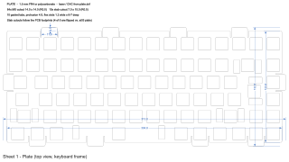
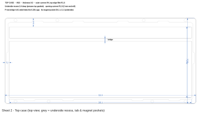
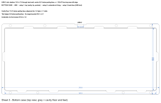
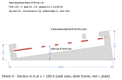

Custom 75 % keyboard: gasket-mount case
CNC-machined case with a gasket-mounted plate (Poron pads) and magnets instead of screws. Everything is generated from the KiCad board in src/02_pcb by the build123d scripts in src/.
| Feature | Value |
|---|---|
| Outside size | 319.8 × 143.8 mm, 148 mm deep on the desk |
| Height (front / back) | 22.1 / 42.1 mm |
| Typing angle | 8°, from the wedge-shaped bottom case |
| Mass | top case ≈ 87 g + bottom case ≈ 655 g |
| Mount | 10 plate tabs between Poron pads |
| Closure | 8 pairs of 5 × 2 mm magnets |
Build
From src/03_case, with Docker Desktop running (pinned environment, build123d 0.13.0):
docker compose build
docker compose run --rm cad src/build_all.py
docker compose run --rm cad src/drawings.py
docker compose run --rm cad src/docs_html.py
Serve the viewer, then open http://localhost:8765/out/viewer.html:
docker compose run --rm --service-ports cad -m http.server 8765
build_all.py also checks that no two parts overlap (all results must be 0.0). Re-exporting in/pcb.step and in/pcb_full.step after a PCB change needs kicad-cli on the host.
Design summary
Stack-up (PCB top = 0, in mm): PCB −1.51 … 0, plate 3.5 … 5.0, gasket pads 3.0 (compressed to 2.4), parting plane 5.0, top surface 14.0, cavity floor −6.51.
- Plate: 1.5 mm, 14 × 14 mm switch cutouts, Cherry screw-in stabilizer cutouts, 10 gasket tabs with flex slots. Positions come from the KiCad footprints.
- Top case: 9 mm frame with a 4.5 mm F-row bridge.
- Bottom case: cavity parallel to the plate, alignment lip, USB-C slot with a 1 mm skin so only the port shows, pry notch at the back, underside at 8° with four Ø10.4 recesses for rubber feet.
- Stabilizers: S5 is in the standard Cherry orientation, S1–S4 are rotated 180° on the PCB. The plate follows the PCB, so it fits as is.
Manufacturing
- Top case: 2 setups. Bottom case: 3 setups (parting face, 8° underside, USB-C slot on the back face).
- Prototype first: 3D-print the STLs to check the fit before paying for CNC.
Hardware list (amazon.fr)
Search terms are in French where that finds the right product more easily.
| # | Item | Qty | Specification | Search on amazon.fr |
|---|---|---|---|---|
| 1 | Neodymium magnets | 16 (8 pairs) + spares | Disc 5 × 2 mm, N52 | aimant néodyme 5x2 mm (packs of 50) |
| 2 | Gasket foam | 20 pads | Poron 3 mm (or EPDM sponge 3 mm), self-adhesive; cut into 15 × 3 mm pads | poron 3mm adhésif / joint mousse EPDM adhésif 3 mm |
| 3 | Rubber feet | 4 | Ø10 × 3 mm flat self-adhesive bumpers | patins caoutchouc adhésifs 10 x 3 mm |
| 4 | Case foam | 1 sheet ≥ 310 × 130 mm | 3 mm Poron, or EVA as a cheaper option; cut from case_foam.dxf |
feuille mousse EVA 3 mm A3 |
| 5 | PCB/plate foam (optional) | 1 sheet | 3–3.5 mm Poron or PE, with switch holes | mousse polyuréthane 3 mm |
| 6 | Glue | 1 | Cyanoacrylate gel or 2-part epoxy | colle cyanoacrylate gel / Araldite |
Drawings







